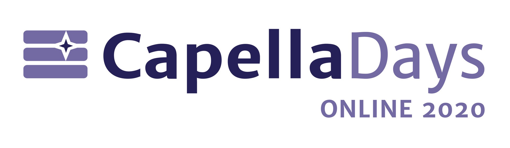

Partners
Capella Days is organized by Obeo in partnership with Thales, Altran and TNO-ESI
This year, Capella Day becomes Capella Days Online!
During 4 days, we will propose 12 sessions dedicated to Capella: 3 per day, from 4:00 pm CEST to 6:10 pm CEST.
After a great 2019 edition in Munich, mainly featuring Capella complimentary tools and add-ons, this year we have decided to focus on industrial MBSE case-studies.
Check-out the program featuring very interesting talks from Capella's feedback on experience from different engineering domains:
This event organized by Obeo, in partnership with Thales, Altran and TNO-ESI, brings together the community of Capella and Arcadia:
Capella is an open-source and field-proven Model-Based Systems Engineering (MBSE) solution to successfully design systems architecture.
It provides systems, software and hardware architects with rich methodological guidance relying on Arcadia, a comprehensive model-based engineering method based on both industrial experimentations and system engineers' feedback
Natively supporting Arcadia , Capella can be customized to fit the specific needs of many industrial domains.
Capella Days is your opportunity to learn from Capella ecosystem members.
Discover the roadmap, get insights about methodology, MBSE trends and latest Capella features.
Benefit from the experience of industrial adopters who have sucessfully deployed an MBSE approach with Arcadia and Capella on their projects.
| Time | Session | Speakers |
|---|---|---|
| 4:00 pm CET | Welcome and Introduction | |
| 4:05 pm CET | Keynote | Juan Navas (Thales) |
| 4:45 pm CET | MBSE in a Medtronic Open Source Ventilator Project | Tony Komar (Siemens) |
| 5:25 pm CET | Successful Capella Landing on a CNES Operational Use-Case | Jonathan Lassale (Artal) |
| 6:05 pm CET | Closing |
| Time | Session | Speakers |
|---|---|---|
| 4:00 pm CET | Welcome and Introduction | |
| 4:05 pm CET | MBSE Trends | Frans Benker (ESI-TNO) |
| 4:45 pm CET | Capella Development Status & Future Work | Juan Navas (Thales) |
| 5:25 pm CET | Integrating MBSE and Life Cycle Assessment for Removing Plastics from the Oceans with The SeaCleaners | Arnaud Dieumegard (Obeo) Raphaël Pagé (Obeo) |
| 6:05 pm CET | Closing |
| Time | Session | Speakers |
|---|---|---|
| 4:00 pm CET | Welcome and Introduction | |
| 4:05 pm CET | Specification and Architecture of a System Factory for Space Systems using Capella | Elena Alaña Salazar (GMV) Tiago Manuel Da Silva Jorge (GMV) |
| 4:45 pm CET | Railway Case-Study | Harish Narayanan (NextRail) |
| 5:25 pm CET | High-Speed Transportation Case-Study | Brandon Blau (Virgin Hyperloop) Betrand Knop (Virgin Hyperloop) |
| 6:05 pm CET | Closing |
| Time | Session | Speakers |
|---|---|---|
| 4:00 pm CET | Welcome and Introduction | |
| 4:05 pm CET | Automotive Case-Study at Vitesco | Jérôme Montigny (Vitesco Technologies) |
| 4:45 pm CET | Case-Study by Altran Netherlands | |
| 5:25 pm CET | Arcadia/Capella Open Q&A Session | Jean-Luc Voirin (Thales) Juan Navas (Thales) |
| 6:05 pm CET | Closing |
Capella Days is a free event.
Just register on the video conferencing platform to access to online sessions.
RegisterCapella Days is organized by Obeo in partnership with Thales, Altran and TNO-ESI